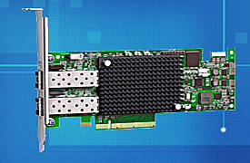

Target driver for Emulex FC/FCoE

The Emulex OneCore Storage FC/FCoE driver (ocs_fc_scst) is developed and maintained by Emulex. It is available on the emulex.com download page under OneCore Storage Drivers. The Emulex OneCore driver supports the Service Level Interface 4 (SLI-4) API and is compatible with the latest generation of Emulex 8 and 16 Gb/s Fibre Channel HBAs (LPe15000 and LPe16000 series), as well as the latest generation of 10 and 40 Gb/s FCoE UCNAs (OCe14000-series).
The ocs_fc_scst driver has been tested with SCST version 3.0.1, as well as SCST version 2.2.0. The driver supports both target and initiator mode of operation and a number of advanced features: NPIV, T10-PI, etc. Please refer to the Emulex download page for more information.
Note: The drivers on SourceForge Emulex Drivers are now very old, not maintained and not recommended for new designs.